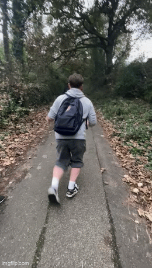

Hello! My name is Dylan Hankers and this is my personal website. I am a 17-year-old Software Programmer based in Cornwall, currently studying a T-Level in Digital Production, Design and Development at Truro College.
I am currently predicted a Pass grade, but I am working hard to exceed expectations. My passion lies in IT — particularly website development (both front-end and back-end), and software development using Python.
This site is a space to share my projects, goals, and journey into the tech industry.
I have many interests and hobbies, some bigger and more enjoyable to me than others.
Firstly, my main hobby has to be football — it's all I want to do. I support Nottingham Forest (NFFC)
and Truro City (TCFC). I play 5-a-side with my old manager at Pool Academy and also play for Goonhavern AFC,
who have just been promoted to Duchy League Division 2.
Secondly, in my free time, I enjoy running 5–10k distances to stay fit and for fun. I usually run
3–4 times a week with my friend Riley Manison. Staying active is very important to me. While I originally
took up running to support my football ambitions, I now do it simply as a hobby and a way to stay healthy.
